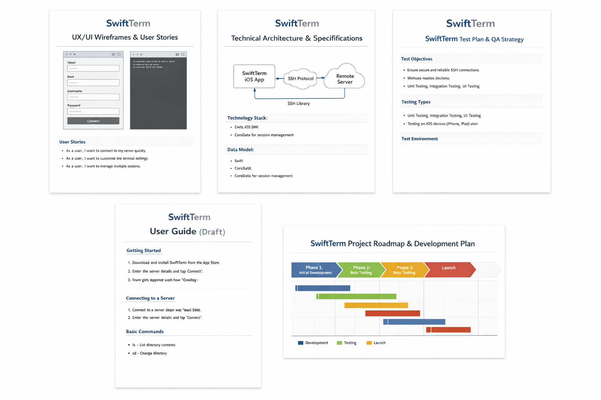

Hosts and keys
Save host profiles, import or generate SSH keys, assign keys to hosts, and keep private key material in Keychain.
iPhone and iPad terminal client
Manage SSH hosts, keys, terminal sessions, command snippets, and SFTP transfers from a clean native iOS workspace.
$ ssh deploy@swiftterm.local
Connected with Ed25519 key
$ tail -f /var/log/app.log
200 GET /health
200 POST /api/releases
$ sftp uploads
queued sync - 3 changesSave host profiles, import or generate SSH keys, assign keys to hosts, and keep private key material in Keychain.
Open multi-session terminal workspaces with an interactive SwiftNIO SSH path and a deterministic mock engine for previews and tests.
Browse remote SFTP directories, upload local files, reuse iOS document bookmarks, and queue sync plans for larger workflows.
Analytics are opt-in and sanitized. Hostnames, commands, key material, emails, and IP-like values are rejected from telemetry.
Architecture
SwiftTerm uses dependency-injected SwiftUI stores, protocol-backed SSH/SFTP/StoreKit/analytics seams, and a generated Xcode project so production adapters can replace test doubles without rewriting the UI.
